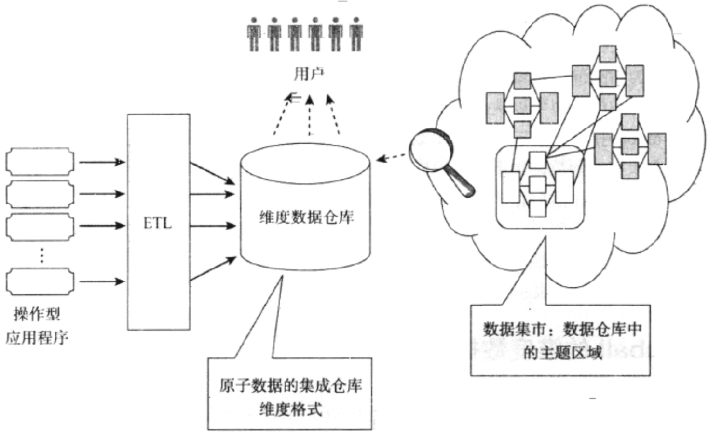

企业级数据仓库体系结构分类
- Inmon的企业信息化工程
- Kimball的维度数据仓库
- 独立型数据集市
Inmon的企业信息化工程
Inmon的体系结构中，先用ER模型(第3范式)建立一个企业级的原子数据仓库，该数据仓库是不对数据仓库应用软件提供服务的，因为原子数据的性质，该仓库尽可能的包括最底层的细节数据。随后，在原子数据仓库的基础上建立数据集市对外提供服务，也就是说数据集市和原子数据仓库是物理分开的。数据集市可以采用维度模型, 不一定非要用ER模型。
Kimball的维度数据仓库
相对于Inmon的原子数据仓库， Kimball提出了维度数据仓库。它是根据维度建模的原则来设计的，由一系列的星型模型或者多维数据集组成，并由他们尽可能详尽的细节数据。
虽然需要尽可能的避免，但是维度数据仓库可以被分析型系统直接访问。而数据集市是数据仓库中的主题区域，它可以使逻辑的，也可以是报表的子集。

独立型数据集市
独立型数据集市是一个分析型数据存储，并不在企业环境中被设计的，它只关注主题域。数据集市可能采用维度设计，ER关系模型或者其他的设计模型，它能快速，廉价的获得结果。虽然短期内能非常成功，但是当独立型集市支持多个主题时候，它将是灾难。它会导致信息孤岛。
体系结构和维度设计
对比以上三个体系结构:
方法对比: